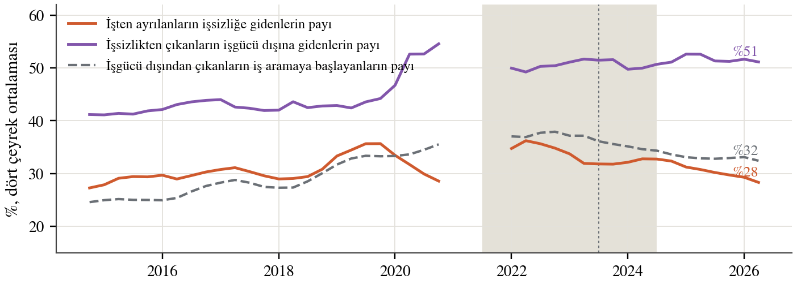
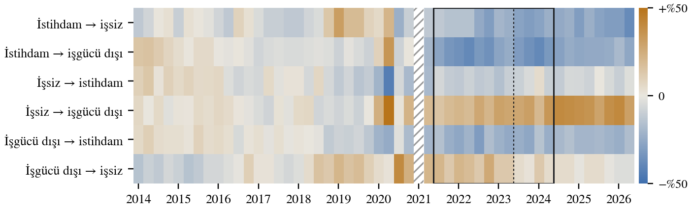
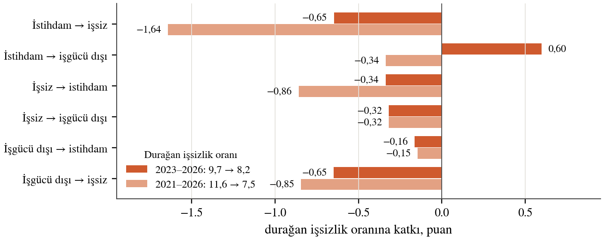
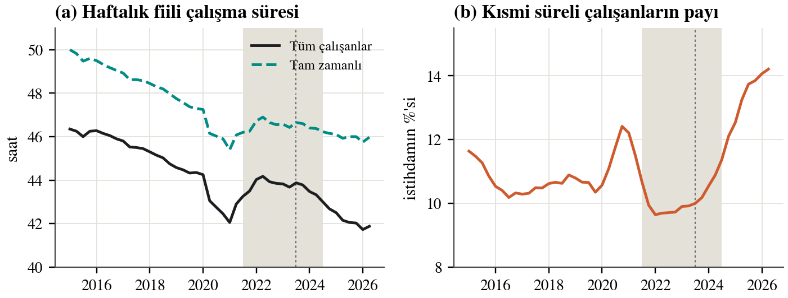

Düşen işsizlik, artan atıl işgücü
Türkiye'de işsizlik oranı 2021'den beri düşüyor; atıl işgücü oranı ise 2023'ten beri yükseliyor. Bu not ayrışmanın nereden geldiğini işgücü akımları, çalışma saatleri ve katılım üzerinden inceliyor.
Ana bulgular
- 2022'de işsizlik %12,0'dan %10,4'e, atıl işgücü %24,4'ten %21,3'e indi. Fark 2023 başında açılmaya başladı ve 2025'te 21,4 puana çıktı.
- Negatif reel faizli indirim evresinde işsizliği iş yaratma düşürdü. Yüksek reel faizli normalleşmede ise işsizlik katılım düştüğü için geriledi.
- İşten ayrılanların işsizliğe gidenlerin payı %35'ten %28'e indi; ayrılanların dörtte üçü işgücü dışına gidiyor.
- Çalışmak isteyenlerin oranı yüksek kaldı, katılım düştü. Aradaki açık, iş aramayıp çalışmaya hazır bekleyen 2,45 milyon kişi.
- Kişi başı haftalık çalışma 43,3 saatten 41,7 saate indi, kısmi süreli çalışanların payı %10,9'dan %14,1'e çıktı.
- Bu yıllarda işsizlik oranı emek piyasasının sıkılığını ölçmüyor; atıl işgücü, saatler ve akımlar daha iyi ölçü.
İşsizlik düşerken atıl işgücü yükseliyor
Atıl işgücü işsizlere iki grup ekler: istediğinden az saat çalışanlar ve çalışmaya hazır olduğu halde iş aramayanlar. 2022'de bütün göstergeler birlikte düştü; 2023'ten sonra iki oran ayrıştı. 2022'den 2025'e işsiz sayısı 0,6 milyon azaldı, eksik istihdam 2,6 milyon, potansiyel işgücü 2,2 milyon arttı.

Essay 3'ü yazmaya başlamadan önce konuyu negatif reel faiz döneminde büyüme ve istihdam olarak kurgulamıştım. Büyümeyi açıklayabiliyordum; istihdam tarafı yerine oturmamıştı. Önce katılım oranına baktım ama belirgin bir patern yakalayamadım. Sonra atıl işgücü ile işsizlik arasındaki farkın açıldığını fark ettim.
Her çeyrek milyonlarca kişi yer değiştiriyor
Stoklar durgun görünse de altında büyük bir hareket var. Her çeyrek işsizlerin yaklaşık üçte biri işgücü dışına çıkıyor; istihdam ile işgücü dışı arasında her yönde iki milyona yakın kişi yer değiştiriyor. Daire alanı stoku, ok kalınlığı o çeyrekte geçen kişi sayısını gösteriyor.

Akımlar 2010'dan 2026'ya
Aynı diyagram 65 çeyrek boyunca. Sağdaki grafikler zamanla kendini çiziyor: üstte işsizlik, atıl işgücü ve durağan işsizlik oranı; altta işten ayrılanların işsizliğe, işsizlikten çıkanların işgücü dışına gidenlerinin payı. Önemli çeyreklerde video kısa bir süre duruyor.
İşini kaybeden işsiz değil, işgücü dışı görünüyor
İşten ayrılanların oranı azalmadı, arttı. Değişen, gittikleri yer. İşsizliğe gidenlerin payı %35'ten %28'e indi; işgücü dışından çıkanlar arasında iş aramaya başlayanların payı %38'den %32'ye düştü. Türkiye'de işsiz sayılmak için aktif iş aramak gerekiyor; işsizlik sigortasının kapsamı dar olduğundan arama yerine bekleme yaygın.


Çalışma isteği yüksek, iş arama düşük
Katılım oranı iki ters hareketin toplamı olduğu için tek başına patern vermiyor. Çalışmak isteyenlerin oranı 2021'den beri yükseldi ve yüksek kaldı; 2024'ten sonra katılım düştü. Aradaki açık, çalışmaya hazır ama iş aramayan kişiler. Kadınlarda bu açık daha geniş.

Katılım oranında patern bulamamamın nedeni bu ayrımmış. Katılım, iş arayan ya da çalışanları sayıyor; asıl eğilim ise çalışmak isteyenlerde. 2024'ten sonra değişen, bu isteğin iş aramaya ve işe dönüşmemesi.
Akımlar artık işsizliği aşağı itmiyor
Geçiş oranları sabit kalsaydı işsizliğin gideceği düzey olan durağan işsizlik oranı 2024 ortasından beri %8,2–8,6 aralığında yatay. 2023–2026'daki 1,5 puanlık düşüşün yaklaşık 1 puanı iş tarafından, yaklaşık 1 puanı iş arama sınırından geldi; işten işgücü dışına çıkışın artması düşüşü 0,6 puan frenledi.

Ayarlamanın bir kısmı saatlerden geçti
Gevşemenin bir kısmı işten çıkarma değil saat kısıtlaması olarak göründü. Kişi başı haftalık çalışma 2023 ortasındaki 43,7 saatten 2026 başında 41,7 saate indi; normalleşmede kısmi süreli iş 1,06 milyon arttı, tam zamanlı iş yaklaşık 0,8 milyon azaldı.

Veri ve yöntem
- TÜİK Hanehalkı İşgücü Anketi: temel göstergeler TCMB EVDS'ten; atıl işgücü bileşenleri, akımlar, saatler ve sektörler TÜİK'in Eurostat'a gönderdiği serilerden; yıllık atıl işgücü oranları TÜİK bültenlerinden. Veriler 6 Ekim 2026'da çekildi.
- Yöntem: işgücü özdeşlikleri, atıl işgücü ile işsizlik arasındaki farkın ayrıştırması, üç durumlu Markov zinciriyle durağan işsizlik ve akım ayrıştırması.
- 2021Q1'de anket yöntemi değişti; akım serisinde o çeyrek yok ve bütün karşılaştırmalar 2021Q2'den başlıyor.
- Bu bir çalışma notudur; mekanizmaların nedensel etkisi test edilmedi.